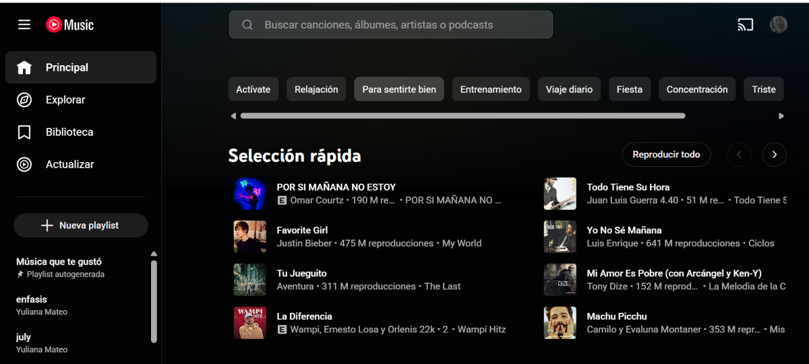
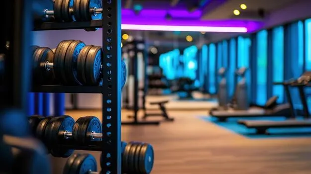
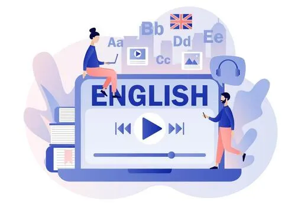

Hola, soy Yuliana
Soy estudiante de Desarrollo de Software y me gusta aprender, crear y descubrir cosas nuevas. Este es un pequeño espacio donde comparto algunos de mis intereses y las cosas que forman parte de mi dia a dia.
Conóceme más
Soy estudiante de Desarrollo de Software y me gusta aprender, crear y descubrir cosas nuevas. Este es un pequeño espacio donde comparto algunos de mis intereses y las cosas que forman parte de mi dia a dia.
Conóceme más
Soy Yuliana Alexandra Mateo, estudiante de Desarrollo de Software. Me considero una persona creativa, responsable, curiosa, aunque también puedo ser estricta en algunas cosas. Me gusta ver series, escuchar música, ir al gym y diseñar.
En mi tiempo libre suelo ir al gym y también ayudar a mi padre en su negocio. Me interesa seguir aprendiendo sobre la programación, sus ramas y diseño, especialmente para poder crear páginas web y desarrollar diferentes proyectos.
Me interesa seguir aprendiendo programación y desarrollar diferentes proyectos.

La música es uno de mis intereses más importantes porque despejo mucho la mente escuchando música.

Me gusta ir al gym porque me siento mas relaja cuando voy.

También me interesa aprender y mejorar cada vez más mi inglés.